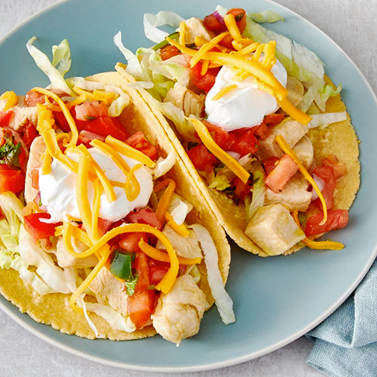

Taco recipe

Description
Tacos are a popular and versatile dish that originated in Mexico and have become beloved worldwide. They consist of a tortilla, which can be either soft or crispy, filled with a variety of ingredients such as seasoned meats, vegetables,
beans, cheese, and salsa. Traditionally, tacos
are made with corn tortillas, but flour tortillas are also common. The fillings can range from classic options like beef, chicken, or pork, to more creative variations with fish, tofu, or roasted vegetables, allowing for endless customization. Tacos are often garnished with toppings such as cilantro, onions, guacamole, sour cream, and lime, adding fresh and zesty flavors. Whether enjoyed at a street food stand or prepared at home, tacos offer a delightful combination of textures and tastes
that make them a go-to meal for any occasion.
Ingredients
- 1 pound skinless, boneless chicken breast halves, cut into bite size pieces
- 1 cup lemonade
- 2 tablespoons olive oil
- 1 tablespoon lime juice
- 1 ½ teaspoons Worcestershire sauce
- ½ teaspoon garlic powder
- ½ teaspoon onion powder
- 1 (12 ounce) package corn tortillas
- 2 large tomatoes, chopped
- 1 head lettuce, shredded
- 1 (8 ounce) package shredded sharp Cheddar cheese
- 1 (8 ounce) jar salsa
- 1 (8 ounce) container sour cream
Steps
- 1.Combine chicken, lemonade, olive oil, lime juice, and Worcestershire sauce in a large skillet over medium heat. Stir in garlic powder, onion powder, and bay leaf. Simmer until chicken is tender and juices run clear, 15 to 20 minutes.
- 2. Meanwhile, warm the tortillas in the oven or microwave until soft. When chicken is fully cooked, transfer to serving bowl. Place chopped tomatoes, lettuce, cheese, salsa, and sour cream in serving dishes. Each person can create their own wrap, using their preferred ingredients.
- enjoy your food